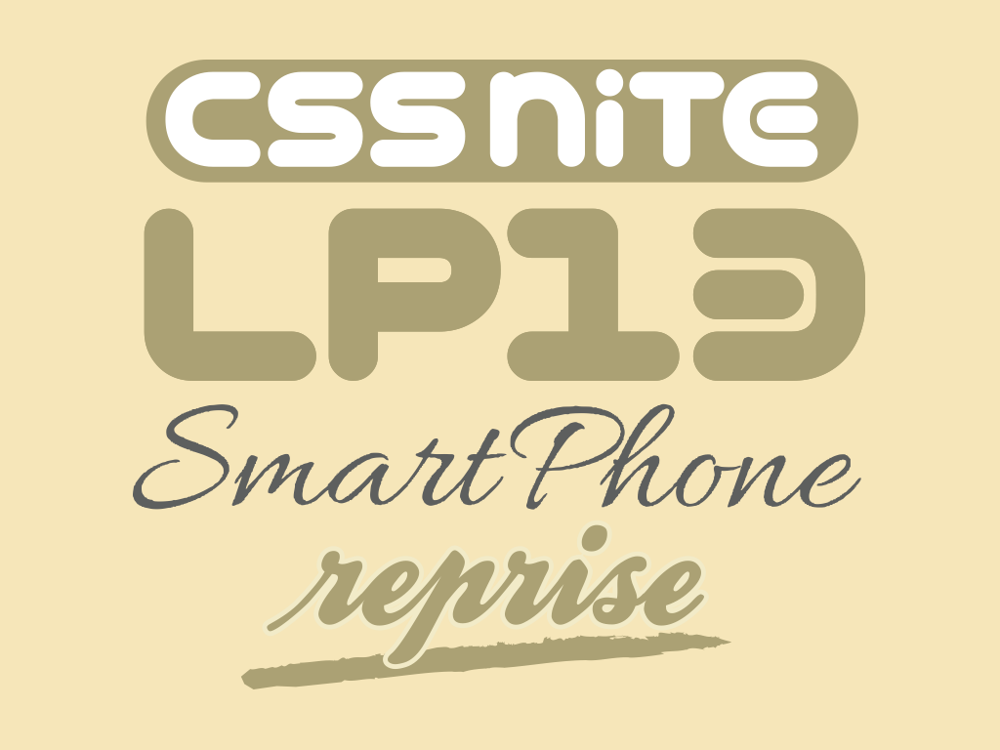
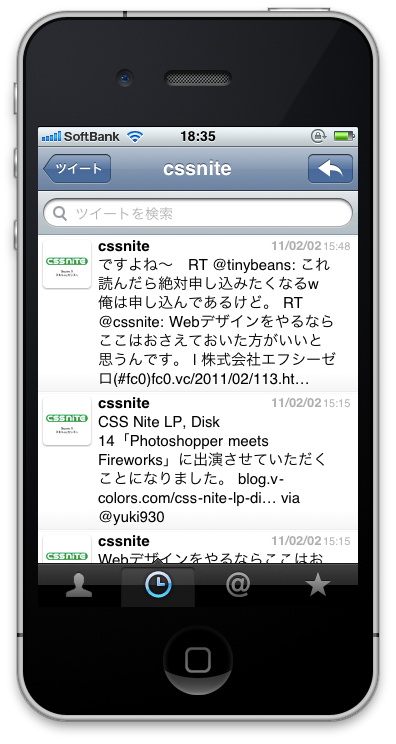
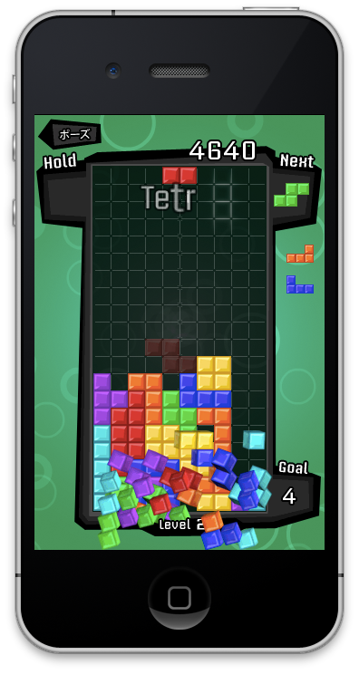
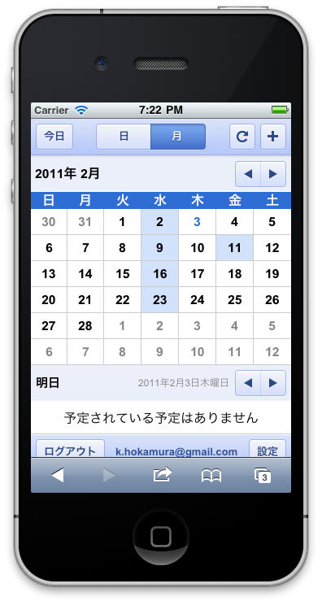
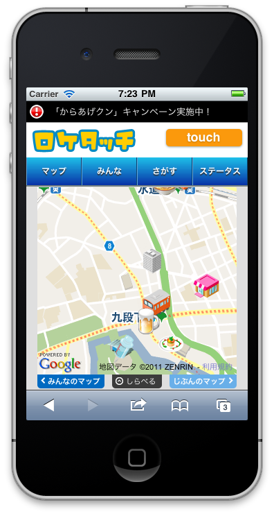
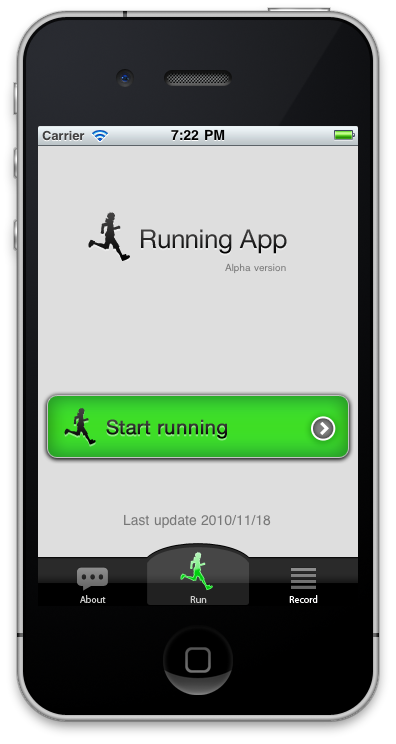
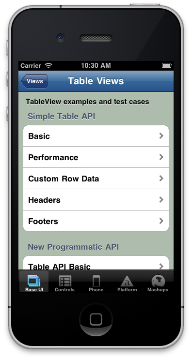
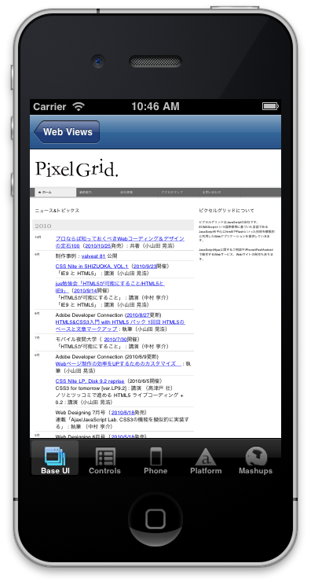
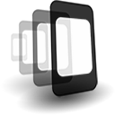
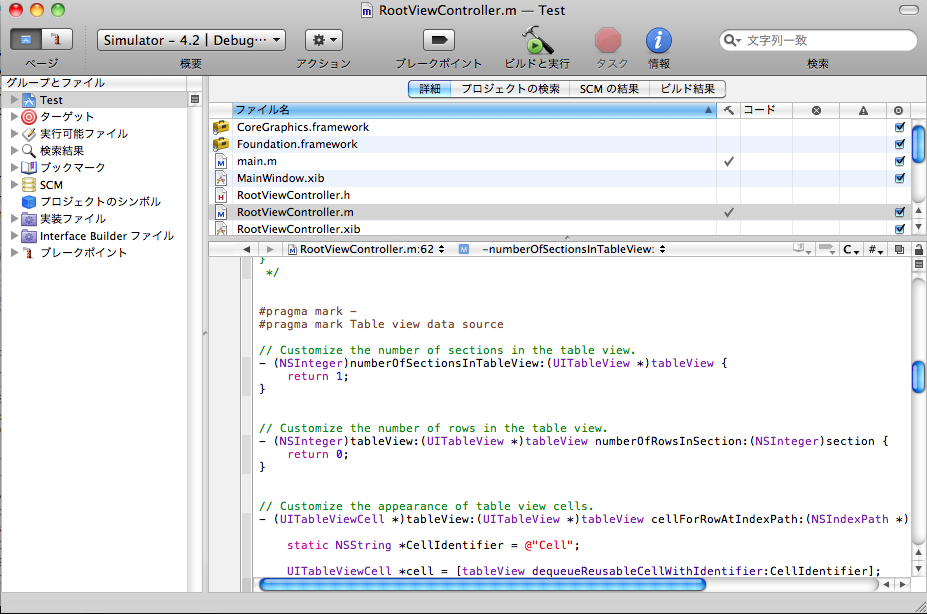

Web制作のノウハウでつくるiPhoneアプリ
2011.02.05
CSS Nite LP13 Reprise

今日の概要
Web制作の技術でApp Store
に申請できるアプリをつくろう
アジェンダ
- ネイティブアプリとWebアプリの比較
- Running Appの紹介
- PhoneGapについて
- Running Appをネイティブアプリ化
- PhoneGapの制作Tips
ネイティブアプリとWebアプリの比較
前提知識
ネイティブアプリとは
- いわゆるiPhoneアプリのこと
- ネイティブアプリの例
Webアプリとは
- ブラウザから見ることができるアプリケーション
- Webアプリの例
ネイティブアプリの例

- 

- 
Webアプリの例
- 
- 
- 
比較項目
- 開発言語
- App Storeでの配布
- マルチプラットフォーム
- 動作速度
- OS固有機能の使用
- UIの作成
- 開発環境
1. 開発言語
ネイティブアプリ
Objective-C。習得が難しいので開発コストがかかる
Webアプリ
HTML/CSS/JavaScript。Web制作の技術がそのまま使えるので開発コストが抑えられる
2. App Storeでの公開
ネイティブアプリ
できる。アプリ単体の課金がしやすいなどのメリットがある
Webアプリ
できない。アプリ単体での課金は難しいが審査が必要ないため、公開、更新の手間かからないのがメリット
3. マルチプラットフォーム
ネイティブアプリ
各プラットフォーム毎にアプリケーションをつくる必要がある
Webアプリ
ブラウザがインストールされているデバイスであればほとんど同じコードで対応可能
4. 動作速度
ネイティブアプリ
複雑なアニメーションをするゲームなどのアプリケーションも高速に動く
Webアプリ
画面遷移などのアニメーションであれば問題ないが複雑な動きになると重くなる
5. OS固有機能の使用
ネイティブアプリ
電話、カメラ、写真などの機能をアプリケーションから使うことができる
Webアプリ
使用できない。ただし位置情報や加速度センサなどの機能はJavaScriptから使用可能
6. UIの作成
ネイティブアプリ
ネイティブUIを使用できる。これらを組み合わせてアプリケーションをつくる
Webアプリ
UIは全部自前で実装する必要がある
7. 開発環境
ネイティブアプリ
Macがないと開発できない
Webアプリ
WindowsでもMacでも開発可能
ネイティブUIとは？
- 

- 
ネイティブアプリとWebアプリの比較
| ネイティブアプリ | Webアプリ | |
|---|---|---|
| 開発言語 | Objective-C | HTML/CSS/JavaScript |
| App Storeでの配布 | ○ | × |
| マルチプラットフォーム | × | ○ |
| 動作速度 | ○ | △ |
| OS固有機能の使用 | ○ | × |
| ネイティブUIの使用 | ○ | × |
| 開発環境 | Mac | Mac/Windows |
Running Appの紹介
WebアプリをApp Store
に申請したい！
できます
PhoneGapについて
PhoneGapとは

- Webアプリをネイティブアプリ化できるソフト
- WebViewを使ってアプリ化する
- Xcodeのプラグイン(のようなもの)
Xcodeとは？
- 
PhoneGapの利点
- WebアプリをApp Storeに登録できる
- カメラなどのいくつかのOS固有機能が使える
- iPhoneだけでなくAndroidなどの複数のプラットフォームに対応
PhoneGapの比較
| ネイティブアプリ | Webアプリ | PhoneGap | |
|---|---|---|---|
| 開発言語 | Objective-C | HTML/CSS/ JavaScript |
HTML/CSS/ JavaScript |
| App Storeでの配布 | ○ | × | ○ |
| マルチプラットフォーム | × | ○ | ○ |
| 動作速度 | ○ | △ | △ |
| OS固有機能の使用 | ○ | × | △ |
| ネイティブUIの使用 | ○ | × | × |
| 開発環境 | Mac | Mac Windows |
Mac (△Windows) |
PhoneGapのインストール
- XcodeとiOS SDKをインストール
https://developer.apple.com/devcenter/ios/index.action - PhoneGapのサイトからパッケージをダウンロード
http://www.phonegap.com/ - ダウンロードしたファイルのiOS/PhoneGapLibInstaller.pkgを実行
Demo
Running Appを
PhoneGapで
アプリ化してみます
PhoneGapでの
制作Tips
作ったアプリ
- 位置情報から近くのお店を検索して表示する
- お気に入り、履歴などの機能がある
- デザインはiPhoneのネイティブUIをできるだけ再現
- ※まだ公開されていないのでお見せできません
Webアプリと同じ作業フロー
- 表示の確認はiOS SafariやPCのブラウザで可能
- クライアントとの共有もブラウザで確認できる
- CSS3やJavaScriptを駆使してUIを作成
- 位置情報やvideo要素などのHTML5機能もフル活用
Webアプリとの挙動の違い
- 縦横の固定ができる
- ステータスバーが消せる
- iframeが使えない
PhoneGapで制作してみての感想
- 制作フローはWebアプリとしてつくるのとほとんど変わらない
- Webアプリを作ってしまえばそれをネイティブアプリ化するのはすごく簡単
- WebアプリをApp Storeに登録したいならPhoneGapはかなりオススメ
その他の手段
Titanium Mobile
- JavaScriptのコードをネイティブアプリに
変換するソフト - ネイティブなUIを簡単に使用できる
- 個人的に今後に期待している
まとめ
- Web制作の技術だけでもネイティブアプリをつくるのは難しくない
- 手法は様々だがそれぞれの手法に長所、短所がある
- つくりたいものに合わせてツールを選ぶのが大事